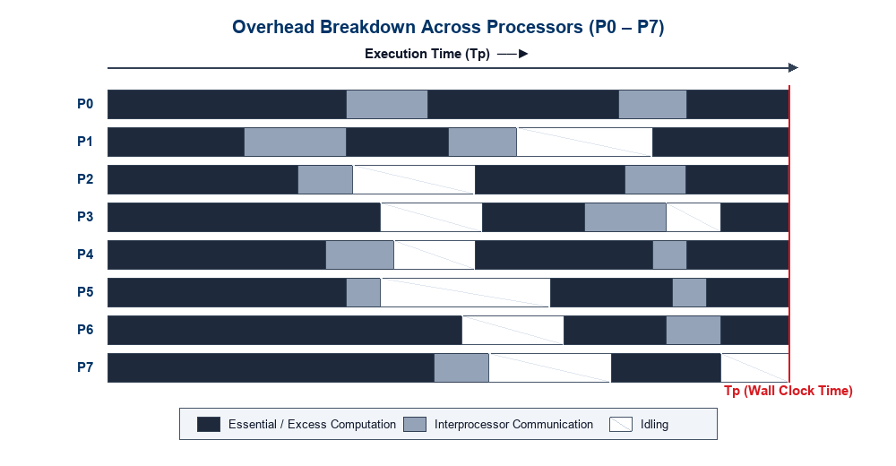
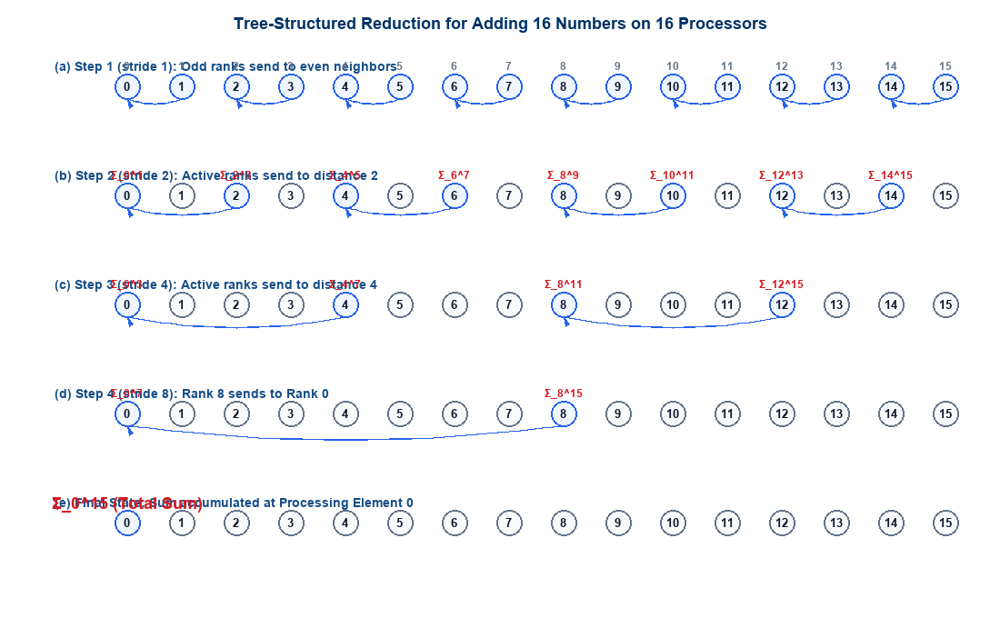
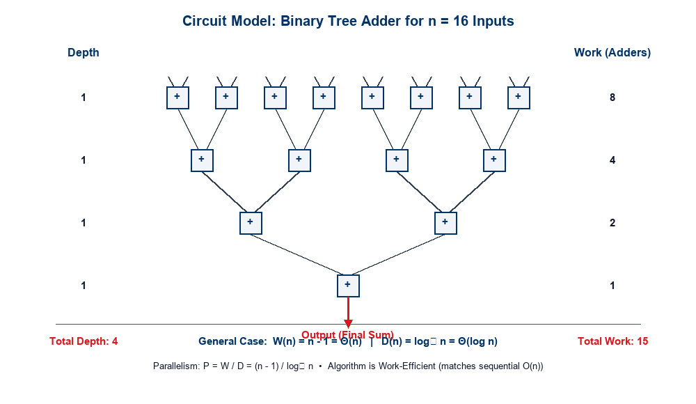
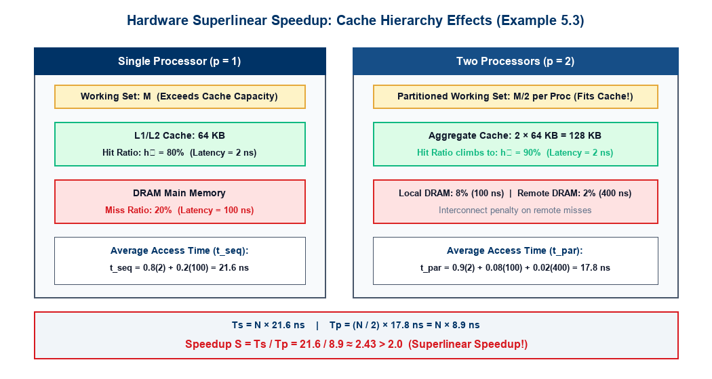

Analytical Modeling of Parallel Systems
Lecture Outline
- Foundations of Analytical Modeling:
- Why sequential analysis (RAM model) fails for parallel computing.
- The definition of a Parallel System (Algorithm + Architecture).
- Wall-clock execution time and baseline selection.
- Sources of Overhead in Parallel Execution:
- Interprocessor interaction and communication latency.
- Processor idling (load imbalance, barriers, serialization).
- Excess computation.
- Fundamental Performance Metrics:
- Serial Runtime (\(T_s\)) vs. Parallel Runtime (\(T_p\)).
- Total Parallel Overhead (\(T_o = p T_p - T_s\)).
- Parallel Speedup (\(S = T_s / T_p\)) and Efficiency (\(E = S / p\)).
- Case Study: Parallel Tree Reduction:
- Summing \(n\) numbers across \(n\) processors in \(O(\log n)\) steps.
- Derivation of speedup: \(S = \Theta(n / \log n)\).
- The Work-Depth Algorithmic Model:
- Abstracting away hardware details: Work (\(W\)) and Depth (\(D\)).
- Available parallelism: \(P = W / D\).
- Three classes: Circuit models, Vector machine models, and Language-based models.
- The Circuit Model Abstraction:
- Directed Acyclic Graphs (DAGs), fan-in, fan-out, and the \(NC\) class.
- Work-efficiency criteria and binary tree adder analysis (\(W = n-1, D = \log_2 n\)).
- Superlinear Speedup (\(S > p\)) & Hardware Resource Effects:
- Algorithmic vs. Resource-based superlinearity.
- In-Depth Walkthrough of Example 5.3: Cache hit ratio shifts yielding \(S = 2.43 > 2\).
- Preview of Brent’s Theorem.
- Review Quizzes (Quizzes 1 & 2):
- Quiz-1 (Lectures 10 & 11): 4 conceptual multiple-choice questions assessing PRAM write schemes, hypercube topology metrics, Omega network blocking, and prefix sum work-efficiency.
- Quiz-2 (Lecture 9 • GPU Architecture & CUDA): 4 conceptual multiple-choice questions assessing warp execution, branch divergence, shared memory latency hiding, and thread block scheduling constraints.
The Need for Analytical Modeling
In sequential computing, algorithm analysis is standardized and machine-independent:
Sequential Model (RAM)
- Evaluated by asymptotic runtime \(T(n)\) as a function of input size \(n\).
- Built upon the Random Access Machine (RAM) model:
- Unit-cost memory access for any address.
- Unit-cost primitive arithmetic/logic operations.
- Platform Invariance: An \(O(n \log n)\) sorting algorithm (e.g., MergeSort) outperforms an \(O(n^2)\) algorithm (e.g., BubbleSort) across virtually all modern single-core processors for large \(n\).
Parallel Model (System-Dependent)
- The parallel runtime of an algorithm depends intimately on:
- Input problem size (\(n\)).
- Number of processing elements (\(p\)).
- Communication network topology, link bandwidth (\(t_w\)), and latency (\(t_s\)).
- Memory organization (Shared memory vs. Distributed message passing).
- Core Principle: A parallel algorithm cannot be evaluated in isolation from the underlying hardware platform!
Definition (Parallel System): A parallel system is the formal pairing of a parallel algorithm and the underlying parallel architecture upon which it executes. Analytical performance modeling always characterizes the behavior of this composite system.
Basics of Analytical Modeling: Performance Measures
Evaluating parallel performance introduces subtle questions absent in serial algorithm analysis:
Wall-Clock Time
- Definition: The elapsed real time from the exact moment the first processor starts execution to the moment the last processor terminates: \[T_p = \max_{0 \le i < p} \left\{ t_{\text{stop}}^{(i)} \right\} - \min_{0 \le i < p} \left\{ t_{\text{start}}^{(i)} \right\}\]
- Portability & Scaling Questions:
- How does wall-clock time behave when \(p\) is increased for a fixed input size \(n\)?
- What happens when ported to an interconnect with higher latency or lower bisection bandwidth?
Baseline Serial Algorithm (\(T_s\))
- How fast is the parallel version?
- Performance must be measured relative to the fastest known sequential algorithm on a single processor of equivalent capability.
- Common Pitfall: Measuring speedup against the parallel algorithm executed on \(p=1\) processor (\(T_1\)) overstates true performance if the parallel algorithm carries extra serial overhead!
- Trade-off of Parallel Amenability:
- Sometimes a poorer serial algorithm (e.g., Bitonic Sort, \(O(n \log^2 n)\)) is preferred because it parallelizes with regular communication patterns, outperforming parallel QuickSort (\(O(n \log n)\)) on specific architectures.
Sources of Overhead in Parallel Programs
“If we deploy \(p\) processors, shouldn’t the application run \(p\) times faster?”
In practice, linear speedup (\(S = p\)) is rarely achieved due to four fundamental sources of overhead:
- Interprocessor Interaction & Communication:
- Transferring intermediate data between processors (network packet latency, bandwidth constraints).
- Remote memory read/write requests over interconnection networks or shared buses.
- Cache coherence invalidation traffic and bus arbitration.
- Processor Idling:
- Load Imbalance: Unequal distribution of computational work among processors.
- Synchronization Latency: Waiting at barriers, mutexes, condition variables, or critical sections.
- Serial Bottlenecks: Portions of the program that cannot be parallelized (Amdahl’s Law).
- Excess Computation:
- Extra operations introduced specifically to organize parallelism (thread creation, task scheduling, redundant recomputations to save communication).

Sources of Overhead: Architectural Breakdown
To design scalable parallel algorithms, we must rigorously categorize every cycle spent by the \(p\) processing elements:
1. Interprocess Interaction
- Any non-trivial parallel problem requires processors to exchange boundary data, reduction values, or synchronizations.
- Latency & Bandwidth: \[T_{\text{comm}} = t_s + m \cdot t_w\]
- Incurs software protocol stack overhead, buffer management, routing hops, and physical link transmission delays.
2. Processor Idling
- While one processor computes, others may sit idle waiting for dependencies.
- Key Causes:
- Algorithmic serialization (e.g., sequential root phase in tree reductions).
- Dynamic workload variation (e.g., adaptive mesh refinement, irregular sparse matrices).
- Global barrier synchronization where fast threads wait for the slowest thread.
3. Excess Computation
- Operations executed in the parallel version that do not exist in the best sequential algorithm: \[W_{\text{excess}} = W_{\text{parallel}} - W_{\text{best\_serial}}\]
- Examples: Recomputing state to avoid communication, calculating global indices, maintaining thread locks, and speculative executions.
“Since different parallel algorithms for solving the same problem incur varying overheads, it is critical to quantify these overheads to establish a figure of merit for each algorithm.” — Grama et al.
Core Performance Metric: Execution Time (\(T_s\) and \(T_p\))
The two fundamental time quantities governing all analytical modeling are:
Serial Runtime (\(T_s\))
- Definition: The time elapsed between the start and finish of the program executing on a single processor, using the fastest known sequential algorithm.
- Important Constraint:
- \(T_s\) must not be measured using the parallel algorithm forced to run on 1 processor (\(T_1\)), unless that algorithm is provably the fastest sequential method.
- Expressed in seconds or as an asymptotic operation count: \(T_s = \Theta(f(n))\).
Parallel Runtime (\(T_p\))
- Definition: The total wall-clock time that elapses from the instant the parallel computation initiates to the moment the last processing element terminates: \[T_p = \max_{0 \le i < p} \left\{ T_i \right\}\]
- Captures:
- Computation performed by the slowest processor.
- All communication delays and synchronization wait states along the critical path.
Total Parallel Overhead (\(T_o\))
The Total Overhead (\(T_o\)) aggregates all lost time across all \(p\) processing elements relative to the serial baseline:
Mathematical Formulation
- If \(p\) processors each run for time \(T_p\), the total processor-time product expended by the system is: \[\text{Total Processor Time} = p \cdot T_p\]
- The time required by the fastest sequential algorithm is \(T_s\).
- The Total Parallel Overhead \(T_o\) is defined as: \[\boxed{T_o = p T_p - T_s}\]
- Components of Overhead: \[T_o = T_{\text{comm}} + T_{\text{idle}} + T_{\text{excess}}\]
Physical Interpretation
- \(T_o\) represents the collective wasted processor cycles across the entire ensemble.
- Ideal System:
- If \(T_o = 0\): \[p T_p - T_s = 0 \implies T_p = \frac{T_s}{p}\]
- This corresponds to perfect linear speedup.
- In all real physical systems: \[T_o > 0 \implies T_p > \frac{T_s}{p}\]
Parallel Speedup (\(S\))
Speedup measures the relative performance advantage of solving a problem in parallel versus sequentially:
Definition
Speedup \(S\) is the ratio of the serial runtime of the best sequential algorithm to the parallel runtime on \(p\) identical processing elements: \[\boxed{S = \frac{T_s}{T_p}}\]
True vs. Relative Speedup
- True (Absolute) Speedup: \[S_{\text{true}} = \frac{T_s^{\text{best\_serial}}}{T_p}\] Measures genuine algorithmic progress.
- Relative Speedup: \[S_{\text{rel}} = \frac{T_{p=1}}{T_p}\] Measures internal scalability of a specific codebase, but can mask poor baseline coding.
Bounds on Speedup
- Linear Speedup: \(S = p\). Execution time scales down in exact proportion to processor count.
- Sublinear Speedup: \(S < p\). The standard behavior due to overheads (\(T_o > 0\)).
- Parallel Efficiency (\(E\)): Fraction of processor time spent on useful work: \[E = \frac{S}{p} = \frac{T_s}{p T_p} = \frac{T_s}{T_s + T_o}\] \[0 \le E \le 1\]
Case Study: Adding \(n\) Numbers on \(n\) Processors
Consider the canonical reduction problem: summing \(n\) numbers using \(p = n\) processing elements (where \(n = 2^k\)):
Problem Formulation
- Input: \(n\) numbers \(A = [a_0, a_1, \dots, a_{n-1}]\).
- Initial State: Each processing element \(P_i\) stores exactly one value \(a_i\).
- Goal: Accumulate the grand sum \(\sum_{i=0}^{n-1} a_i\) into processor \(P_0\).
- Serial Baseline:
- Adding \(n\) numbers sequentially requires \(n - 1\) additions: \[T_s = \Theta(n)\]
Parallel Tree Reduction
- Instead of serial accumulation, processors communicate along a logical binary tree.
- At each step \(k\) (where \(k = 1, \dots, \log_2 n\)):
- Active processors at stride \(2^k\) receive partial sums from neighbors at distance \(2^{k-1}\).
- The receiver adds the incoming value to its own partial sum.
- The sender becomes idle for all subsequent steps.
- Number of communication stages: \[\text{Steps} = \log_2 n\]
Step-by-Step Tree Reduction (\(n = 16, p = 16\))
At each step, the stride doubles while the number of active processors halves:

Trace of 16-element tree reduction across 4 communication stages leading to final sum at P0
Speedup & Overhead Analysis of Tree Addition
Let addition take constant unit time \(t_{\text{add}} = O(1)\) and communication take constant time \(t_{\text{comm}} = O(1)\):
Parallel Runtime (\(T_p\))
- The reduction tree has depth \(\log_2 n\).
- At each level, an active processor performs 1 message reception and 1 addition: \[T_p = \sum_{k=1}^{\log_2 n} (t_{\text{comm}} + t_{\text{add}}) = \Theta(\log n)\]
Speedup (\(S\))
- Comparing against the sequential time \(T_s = \Theta(n)\): \[\boxed{S = \frac{T_s}{T_p} = \frac{\Theta(n)}{\Theta(\log n)} = \Theta\left(\frac{n}{\log n}\right)}\]
Parallel Overhead (\(T_o\)) & Efficiency (\(E\))
- Total Overhead: \[T_o = p T_p - T_s = n \cdot \Theta(\log n) - \Theta(n) = \Theta(n \log n)\]
- Parallel Efficiency: \[E = \frac{S}{p} = \frac{\Theta(n / \log n)}{n} = \Theta\left(\frac{1}{\log n}\right)\]
- Critical Takeaway: As problem size \(n\) grows, efficiency drops toward zero (\(E \to 0\) as \(n \to \infty\))! Root cause: Overwhelming idling overhead as half the active processors retire at every stage.
The Work-Depth Algorithmic Model
Why do we need an abstract algorithmic model beyond concrete multiprocessor architectures?
The Architectural Dilemma
- Designing algorithms directly for specific multiprocessor models (Bus, Hypercube, Torus, Omega MIN) ties the algorithm to hardware-specific details:
- Cache line sizes, network link topologies, routing protocols.
- A change in hardware requires redesigning the algorithm.
- The Alternative: Focus on the intrinsic algorithmic properties independent of the machine!
Work-Depth Foundations
The Work-Depth model (Blelloch, JáJá) analyzes a parallel algorithm via two fundamental quantities: 1. Work (\(W\)): The total number of operations performed by the algorithm across all parallel threads. 2. Depth (\(D\)): The length of the longest sequence of dependent operations (critical path length or span).
Parallelism of an Algorithm: \[\boxed{P = \frac{W}{D}}\] \(P\) represents the average available parallelism (the average number of operations that can execute concurrently at each step along the critical path).
Work-Depth Model: Key Observations
Core Advantages
- Platform Independence:
- Algorithms are designed without worrying about number of physical processors, communication latency, or routing deadlocks.
- Focuses solely on exposing maximum algorithmic concurrency.
- Universal Translation:
- Efficient algorithms in the work-depth model can be systematically compiled and mapped onto concrete multiprocessor models (PRAM, shared memory, distributed clusters).
- Physical execution time on \(p\) processors is bounded by Brent’s Scheduling Theorem: \[\frac{W}{p} \le T_p \le \frac{W}{p} + D\]
Three Classes of Work-Depth Models
- Circuit Models:
- Directed Acyclic Graphs (DAGs) of primitive functional gates/nodes.
- Vector Machine Models:
- Parallel collection-oriented operations (vector map, reduce, prefix scan).
- Formulated by Guy Blelloch (NESL).
- Language-Based Models:
- Nested fork-join concurrency, dynamic multithreading DAGs (Cilk, OpenMP tasks, Intel TBB).
Circuit Model: Abstraction of Work-Depth
A circuit is a formal computational model represented as a Directed Acyclic Graph (DAG):
Circuit Elements
- Nodes: Represent basic operations (e.g., addition \(+\), multiplication \(\times\), comparison \(<\), logic gates).
- Directed Edges: Represent data flow dependencies:
- Input values arrive at a node along incoming edges.
- The computed result leaves the node along outgoing edges to downstream nodes.
- Fan-in & Fan-out:
- Fan-in: Number of incoming edges to a node (typically 2 for binary operations).
- Fan-out: Number of outgoing edges from a node (degree of result replication).
Circuit Boundaries
- Input Edges: Edges that enter the circuit from the external environment (problem inputs). These edges do not originate at internal nodes.
- Output Edges: Edges carrying the final results out of the circuit. These edges do not terminate at internal nodes.
- Work (\(W\)): \[\boxed{W = \text{Total number of nodes in the circuit}}\]
- Depth (\(D\)): \[\boxed{D = \text{Number of nodes on the longest directed path from input to output}}\]
Work-Efficiency & The “Gold Standard” of Parallel Algorithms
In the work-depth and circuit models, we assess algorithm optimality using two primary benchmarks:
Work-Efficiency
- An algorithm is work-efficient if its total work \(W(n)\) asymptotically matches the runtime \(T_s(n)\) of the fastest known sequential algorithm: \[\boxed{W(n) = \Theta(T_s(n))}\]
- Significance: A work-efficient parallel algorithm wastes no excess computational energy; when mapped to a single processor, it runs just as fast as the best serial code.
The “Gold Standard” (Nick’s Class / \(NC\))
A parallel algorithm is considered fundamentally optimal if it simultaneously satisfies two conditions: 1. Work-Efficient: \[W(n) = O(T_s(n))\] 2. Polylogarithmic Depth: \[D(n) = O(\log^k n) \quad \text{for some constant } k \ge 1\] - Algorithms achieving polylogarithmic depth with polynomial work belong to the complexity class \(NC\) (Nick’s Class).
Circuit Model: Adding \(n\) Numbers (\(n = 16\))
Let us represent the summation of \(n=16\) numbers as a combinational reduction circuit of binary adders:

Binary adder circuit DAG for 16 numbers, showing 15 adder nodes across 4 levels
Complexity Breakdown of Binary Tree Adder Circuit
For an arbitrary input size \(n\) (assuming \(n = 2^k\)):
Work Analysis (\(W\))
- Level 1 contains \(n/2\) adders.
- Level 2 contains \(n/4\) adders.
- Level \(i\) contains \(n/2^i\) adders.
- Level \(\log_2 n\) contains 1 adder.
- Summing across all \(\log_2 n\) levels: \[W(n) = \sum_{i=1}^{\log_2 n} \frac{n}{2^i} = n \left(1 - \frac{1}{2^{\log_2 n}}\right) = \mathbf{n - 1}\]
- Asymptotic Work: \(W(n) = \Theta(n)\).
- Matches sequential addition (\(n-1\) adds). Therefore, the algorithm is strictly work-efficient!
Depth Analysis (\(D\))
- The longest directed path passes through exactly one adder at each tier of the balanced binary tree.
- Total levels from input wires to output wire: \[\mathbf{D(n) = \log_2 n}\]
- Asymptotic Depth: \(D(n) = \Theta(\log n)\).
- Average Parallelism (\(P\)): \[P = \frac{W}{D} = \frac{n - 1}{\log_2 n} = \Theta\left(\frac{n}{\log n}\right)\]
- Meets the Gold Standard: Work-efficient (\(O(n)\)) and logarithmic depth (\(O(\log n)\))!
The Phenomenon of Superlinear Speedup (\(S > p\))
Can a parallel system with \(p\) processors achieve a speedup strictly greater than \(p\)?
The Theoretical Dilemma
- Under standard theoretical assumptions, superlinear speedup (\(S > p\)) should be impossible:
- If an algorithm runs in time \(T_p\) on \(p\) processors, a single processor could time-slice among the \(p\) threads and finish in: \[T_1 \le p \cdot T_p \implies S = \frac{T_1}{T_p} \le p\]
- Yet in empirical benchmarks on real machines, \(S > p\) is repeatedly observed!
Why Superlinear Speedup Occurs
- Algorithmic Anomalies:
- Sub-optimal serial baseline (using a slow sequential code instead of the fastest algorithm).
- Non-deterministic / exploratory search (e.g., parallel depth-first search where one thread finds the target early and aborts other branches).
- Hardware / Resource-Based Effects:
- Dividing a large working set across \(p\) processors expands the aggregate cache memory, radically reducing memory stall cycles!
Hardware Resource-Based Superlinear Speedup
When a problem is partitioned across \(p\) processors, each processor receives a fraction \(1/p\) of the total dataset:
Single Processor Bottleneck
- The full working set size \(M\) exceeds the capacity of the local processor cache (\(M > C_{\text{cache}}\)).
- The processor suffers heavy cache capacity misses.
- Memory access latency is dominated by slow off-chip DRAM accesses (\(t_{\text{DRAM}} \gg t_{\text{cache}}\)), creating severe memory stalls.
Multi-Processor Cache Expansion
- Across \(p\) processors, the aggregate cache capacity is: \[C_{\text{aggregate}} = p \cdot C_{\text{cache}}\]
- The reduced per-processor working set (\(M / p\)) fits completely or predominantly inside the local fast cache!
- Cache hit ratio spikes dramatically, collapsing mean memory latency.
Key Insight: The parallel computer is not merely providing \(p\) times the CPU ALU cycles—it is providing \(p\) times the cache capacity and \(p\) times the memory bus bandwidth!
Quantitative Walkthrough: Textbook Example 5.3
Let us rigorously analyze Example 5.3 from Grama et al. (Introduction to Parallel Computing):

Architectural comparison: Single processor cache bottleneck vs. 2-processor partitioned working set
Numerical Derivation of Example 5.3
System Memory Latency Specifications
- Cache Access Time: \(t_{\text{cache}} = 2\text{ ns}\)
- Local DRAM Access Time: \(t_{\text{DRAM}} = 100\text{ ns}\)
- Remote Memory Access Time: \(t_{\text{remote}} = 400\text{ ns}\)
Case 1: Single Processor (\(p = 1\))
- Cache capacity: \(64\text{ KB}\).
- Due to working set size, cache hit ratio is \(h_1 = 80\% = 0.80\).
- Cache miss ratio is \(20\% = 0.20\) (served by DRAM).
- Mean access latency per reference: \[t_{\text{seq}} = h_1 \cdot t_{\text{cache}} + (1 - h_1) \cdot t_{\text{DRAM}}\] \[t_{\text{seq}} = 0.80(2\text{ ns}) + 0.20(100\text{ ns}) = 1.6 + 20 = \mathbf{21.6\text{ ns}}\]
- For \(N\) total memory references, serial runtime is: \[T_s = N \cdot t_{\text{seq}} = \mathbf{21.6\, N\text{ ns}}\]
Case 2: Two Processors (\(p = 2\))
- Working set halved \(\to\) hit ratio increases to \(h_2 = 90\% = 0.90\).
- Remaining \(10\%\) misses:
- \(8\%\) serviced by local DRAM (\(100\text{ ns}\)).
- \(2\%\) serviced by remote memory over interconnect (\(400\text{ ns}\)).
- Mean access latency per reference: \[t_{\text{par}} = 0.90(2\text{ ns}) + 0.08(100\text{ ns}) + 0.02(400\text{ ns})\] \[t_{\text{par}} = 1.8 + 8.0 + 8.0 = \mathbf{17.8\text{ ns}}\]
- Each processor executes \(N/2\) accesses in parallel: \[T_p = \frac{N}{2} \cdot t_{\text{par}} = \frac{17.8}{2} N = \mathbf{8.9\, N\text{ ns}}\]
- Resulting Speedup (\(S\)): \[\boxed{S = \frac{T_s}{T_p} = \frac{21.6\, N}{8.9\, N} \approx \mathbf{2.43} > 2.0}\]
Speedup \(S = 2.43\) on 2 processors demonstrates legitimate hardware-driven superlinear speedup!
Lecture Summary
- Analytical Modeling Concept:
- A parallel system is the pairing of an algorithm with an architecture.
- Baseline comparison must always be the fastest known sequential algorithm (\(T_s\)).
- Overhead Decomposition:
- \(T_o = p T_p - T_s = T_{\text{comm}} + T_{\text{idle}} + T_{\text{excess}}\).
- Tree reduction on \(n\) processors achieves \(T_p = \Theta(\log n)\) and \(S = \Theta(n / \log n)\), but efficiency degrades (\(E \to 0\)) due to idling overhead.
- The Work-Depth Model:
- Quantifies intrinsic concurrency: Work (\(W\)) and Depth (\(D\)), with parallelism \(P = W / D\).
- Circuit DAGs evaluate work-efficiency (\(W(n) = \Theta(T_s(n))\)) and polylogarithmic depth (\(D(n) = O(\log^k n)\)).
- Adder tree achieves \(W = n - 1\) (work-efficient) and \(D = \log_2 n\).
- Superlinear Speedup:
- Cache size expansion increases hit rates from 80% to 90%, proving mathematically that \(S = 2.43 > 2.0\) on two processors.
Looking Ahead: Brent’s Scheduling Theorem
In our next lecture, we bridge the gap between abstract DAGs and physical hardware:
The Scheduling Problem
- An abstract algorithm has work \(W\) and depth \(D\).
- In reality, we have a fixed number of physical processors \(p \ll W\).
- How efficiently can the operations of the DAG be scheduled onto \(p\) processors?
Brent’s Theorem (1974)
Any parallel algorithm with work \(W\) and depth \(D\) can be executed on \(p\) processors in time: \[\boxed{T_p \le \frac{W - D}{p} + D < \frac{W}{p} + D}\] - Guarantees near-optimal speedup whenever \(p \le W / D\)!
Lecture 13:
Brent’s Scheduling Principle, Cost-Optimality, & The Isoefficiency Scalability Metric
Review Quiz-1: Physical Organizations & PRAM (Lectures 10 & 11)
Q1 (Lecture 10 • PRAM Models): Under the PRAM taxonomy, which statement is CORRECT?
(A) EREW PRAM is strictly more powerful than CRCW PRAM.
(B) In Priority CRCW, the processor with lowest ID succeeds on write conflicts.
(C) A shared-memory PRAM crossbar requires only \(O(p + m)\) switches.
(D) Common CRCW allows differing values to be written concurrently at random.
Q2 (Lecture 10 • Hypercube Metrics): For a \(d\)-dimensional Hypercube with \(p = 2^d\) nodes, what are its Diameter (\(D\)) and Bisection Width (\(B\))?
(A) \(D = 2^d, \quad B = d\)
(B) \(D = \sqrt{p}, \quad B = \sqrt{p}\)
(C) \(D = d = \log_2 p, \quad B = 2^{d-1} = p / 2\)
(D) \(D = 2 \log_2 p, \quad B = 1\)
Q3 (Lecture 11 • Omega Network): For an 8-input, 8-output (\(p = 8\)) Omega network using \(2\times 2\) switches, which statement is CORRECT?
(A) It has \(\log_2 8 = 3\) stages (12 switches total) and is subject to link blocking.
(B) Perfect Shuffle maps inputs via a 1-bit cyclic right shift of their binary index.
(C) It is completely non-blocking for all one-to-one communication permutations.
(D) Routing requires an external centralized controller inspecting all destination tags.
Q4 (Lecture 11 • Prefix Sum / Scan): Why is Upsweep-Downsweep (Blelloch) preferred over Hillis-Steele for large inputs?
(A) Hillis-Steele has \(O(n)\) span, whereas Blelloch achieves \(O(\log n)\) span.
(B) Hillis-Steele requires \(O(n^2)\) work, whereas Blelloch requires \(O(n \log n)\) work.
(C) Both have \(O(\log n)\) span, but Hillis-Steele is work-inefficient (\(\Theta(n \log n)\) work) while Blelloch is work-efficient (\(\Theta(n)\) work).
(D) Blelloch requires only a single pass without storing any tree sums.
Take a moment to record your answers before proceeding to the answer keys on the next slide!
Review Quiz-1: Answer Keys & Detailed Explanations
Q1 Key: (B) Priority CRCW Resolution
• Why (B) is True: Priority CRCW resolves write conflicts deterministically by granting the write to the processor with the lowest ID (highest priority).
• Why others are false: EREW is the weakest PRAM class (A); a crossbar requires \(\Theta(pm)\) switches (C); Common CRCW strictly permits writes only if values are identical (D).
Q2 Key: (C) \(D = \log_2 p, \quad B = p / 2\)
• Why (C) is True: Maximum Hamming distance between any two \(d\)-bit nodes is \(d = \log_2 p\). Severing all parallel links across one dimension bisects the cube with \(2^{d-1} = p/2\) links.
• Why others are false: \(2^d = p\) is node count (A); \(\sqrt{p}\) describes 2D mesh/torus (B); \(B = 1\) is a standard tree network bottleneck (D).
Q3 Key: (A) 3 Stages, 12 Switches, Blocking Network
• Why (A) is True: An 8-node Omega network has \(\log_2 8 = 3\) stages of \(p/2 = 4\) switches (12 total). Shared intermediate links cause internal path blocking collisions.
• Why others are false: Perfect Shuffle is a 1-bit cyclic left rotation (B); only full crossbars are non-blocking (C); switches use distributed self-routing via destination tag bits (D).
Q4 Key: (C) Blelloch achieves Optimal \(\Theta(n)\) Work
• Why (C) is True: Both have span \(S = O(\log n)\). Hillis-Steele performs \(\sum (n - 2^k) = \Theta(n \log n)\) work (work-inefficient); Blelloch performs \(W_{\text{up}} + W_{\text{down}} = \Theta(n)\) work (work-optimal).
• Why others are false: Hillis-Steele span is \(O(\log n)\) (A); Hillis-Steele work is \(\Theta(n \log n)\) (B); Blelloch strictly requires both Upsweep (reduction) and Downsweep (distribution) (D).
Key Takeaway: Algorithmic work-efficiency (\(W = O(T_s)\)) and interconnection bisection width (\(B\)) directly dictate how parallel systems scale under Brent’s Theorem!
Review Quiz-2: GPU Architecture & CUDA (Lecture 9)
Q1 (Lecture 9 • Warp Execution & SIMD): Which statement regarding warps and SIMD execution on GPUs is CORRECT?
(A) A warp (32 threads) is an explicit programmer-defined construct declared in kernel launch syntax.
(B) A warp is a hardware implementation detail; divergent branches serialize execution via thread masking.
(C) Branch divergence between threads of different blocks on the same SM stalls all active warps.
(D) Warps eliminate SIMD execution by granting each thread an independent instruction fetch/decode unit.
Q2 (Lecture 9 • GPU Latency Hiding): In contrast to CPUs that rely on large caches, how do GPUs primarily achieve latency hiding for memory stalls (400–800 cycles)?
(A) By flushing stalled pipelines and re-executing thread blocks from the start upon cache miss.
(B) By using hardware warp schedulers to switch to other ready warps with zero overhead.
(C) By dynamically doubling the clock frequency of the SM whenever DRAM accesses are in flight.
(D) By converting all off-chip DRAM accesses into speculative prefetch operations offloaded to the host CPU.
Q3 (Lecture 9 • Shared Memory & Cooperative Load): In a 1D stencil convolution, why is cooperative loading into __shared__ memory superior to direct global memory reads?
(A) Shared memory is physically off-chip, offering higher storage capacity than global memory DRAM.
(B) It allows threads in different thread blocks across different SMs to communicate without kernel termination.
(C) Neighboring threads stage overlapping elements once into on-chip scratchpad, cutting global fetches from \(\approx 3N\) to \(\approx N\).
(D) It completely eliminates the requirement to call __syncthreads() before reading the stencil window.
Q4 (Lecture 9 • Block Scheduling & Deadlock): Why does the GPU block scheduler require all threads of an active block to be scheduled onto the SM concurrently?
(A) Threads within a block share a single scalar ALU and must time-share the arithmetic pipeline.
(B) If partial blocks ran sequentially, a __syncthreads() barrier would wait indefinitely for unlaunched threads, causing a deadlock.
(C) CUDA strictly prohibits thread blocks from having more threads than physical warp schedulers.
(D) Global memory cannot be accessed unless all threads across the entire grid are executing simultaneously.
Take a moment to record your answers before proceeding to the answer keys on the next slide!
Review Quiz-2: Answer Keys & Detailed Explanations
Q1 Key: (B) Warp Implementation & Divergence
• Why (B) is True: A warp (32 threads in SIMD lockstep) is an SM hardware execution detail, not part of CUDA’s programming abstractions. On branch divergence (if/else), the SM serializes both paths, masking inactive threads.
• Why others are false: Kernel launch syntax defines grids and blocks, not warps (A); divergence is strictly intra-warp and never stalls independent warps (C); warp threads share an instruction fetch unit (D).
Q2 Key: (B) Zero-Overhead Hardware Warp Context Switching
• Why (B) is True: GPUs maintain register state for dozens of active warps directly in large on-chip register files. When a warp stalls on a 400–800 cycle DRAM read, the scheduler switches to another ready warp with zero cycle overhead.
• Why others are false: Stalled warps preserve their context rather than flushing pipelines (A); SM clock rates do not dynamically double for memory stalls (C); DRAM requests are handled by on-chip memory controllers without host CPU intervention (D).
Q3 Key: (C) Cooperative Staging Cuts Redundant DRAM Traffic
• Why (C) is True: Direct global memory convolution causes redundant overlapping loads (\(3N\) total fetches). Staging data cooperatively into fast on-chip __shared__ memory cuts global DRAM traffic to \(\approx N\) fetches.
• Why others are false: Shared memory is fast on-chip SRAM, not off-chip DRAM (A); shared memory is strictly local to a single block and cannot be accessed across SMs (B); __syncthreads() is mandatory to prevent read-before-write race conditions (D).
Q4 Key: (B) Barrier Synchronization Deadlock Avoidance
• Why (B) is True: Threads in a block can communicate and synchronize via __syncthreads(). If an SM scheduled threads in fractional stages, the first stage would block at __syncthreads() waiting for unlaunched threads, causing a deadlock.
• Why others are false: SM cores contain numerous parallel SIMD ALUs across multiple sub-cores (A); blocks can hold up to 1024 threads regardless of warp scheduler count (C); grid blocks execute independently in any arbitrary order (D).
Key Takeaway: GPU throughput computing succeeds by trading single-thread latency optimization for massive hardware multithreading, zero-overhead warp scheduling, and programmer-managed on-chip memory hierarchies!
References & Further Reading
- Grama, A., Gupta, A., Karypis, G., & Kumar, V. (2003). Introduction to Parallel Computing (2nd ed.). Addison-Wesley.
- Chapter 5: “Analytical Modeling of Parallel Programs” (Sections 5.1: Sources of Overhead, 5.2: Performance Metrics, Example 5.3: Cache Effects).
- JáJá, J. (1992). An Introduction to Parallel Algorithms. Addison-Wesley.
- Chapter 1: “Basic Techniques & The Work-Depth Paradigm”.
- Blelloch, G. E. (1996). “Programming Parallel Algorithms”. Communications of the ACM, 39(3), pp. 85–97.
- Brent, R. P. (1974). “The Parallel Evaluation of General Arithmetic Expressions”. Journal of the ACM, 21(2), pp. 201–206.
- Cormen, T. H., Leiserson, C. E., Rivest, R. L., & Stein, C. (2009). Introduction to Algorithms (3rd ed.). MIT Press.
- Chapter 27: “Multithreaded Algorithms” (Work, Span, and Greedy Schedulers).

CS F422: Parallel Computing • BITS Pilani, Hyderabad Campus